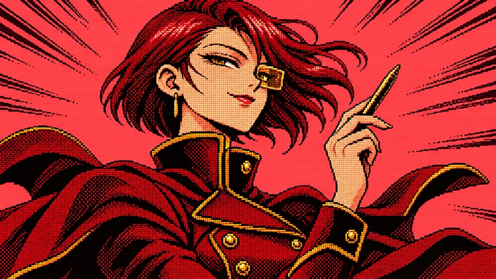

CFO and LogisticsLuci Ferro / ルーシー・フェッロ
CFO and Logistics.
Age 28 | Birthday: 9 Nov | Blood type: AB | Height: 176 cm
- Likes:
- gold fountain pens, clean ledgers, being right
- Dislikes:
- surprise invoices, slow lifts, sentiment on the budget line
"You can call me Ms. Ferro. Remember who you're doing this for."
Sharp-tongued money chief with a crimson bob and a HUD lens over one eye. She keeps the Authority happy and the tower paid for.